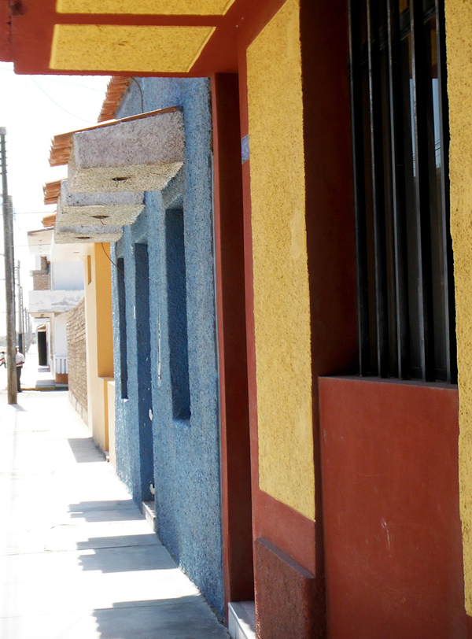

A Beach with History
A little off the beaten path, this beach town has a very quiet, peaceful feel to it. It is lesser known, and therefore receives fewer visitors. But don’t let this fool you– this hidden gem, with long, clean beaches and large waves, is the perfect escape! The town itself is sprinkled with flowers, beautiful murals, and friendly people. Close to the center of town, you can visit an old train yard and explore the beautiful train cars left there. Not cluttered by an excess of pollution, cars, or people, Eten is the perfect place to spend a day to relax. Close to the beach are the beautiful ruins of a church from the 1600’s that was partially destroyed by a tsunami hundreds of years ago. Eten is rumored to be the landing place of Naylamp, the founder of the Lambayeque civilization. Come combine history and nature by playing at the ruins, walking the beach, and spending time in the beautiful beach town of Eten!
| Location |
| The town of Puerto Eten is approximately 13 miles (21 km) from Chiclayo, which is about a 25-minute drive. |
Things to See:
| The Pier |
| The road leading to this pier is exciting in itself in that it has high cliff walls on both sides. The pier stretches out into the ocean for a long ways. The wood pieces used are further apart than normal, requiring you to carefully traverse this dock (we do not recommend this walk for those who are scared of heights or don’t have the steadiest feet). Those who choose to walk it will be rewarded with a stunning view of the beach and the cliffs nearby, and may even get a close view of surfers jumping off the pier to catch the bigger waves. The pier entrance fee is about 2 soles. |
| Church From the 1600s |
| Visit the ruins of a beautiful church from the 1600s that was destroyed hundreds of years ago by a tsunami. As it is not an official tourist site, you will have free reign to explore it as you please! |
| Wetlands |
| Near the church ruins is an impressive wetlands area in which you will find many different species of birds. Tourists can watch for the birds and admire the sand dunes and greenery in the area. We recommend going early in the morning to catch the biggest variety of birds. |
| Train Station |
| Close to the center of town is an abandoned train station, filled with old train cars. Tourists can explore and take pictures with these beautiful pieces of Eten history. |
| Explore the Town |
| It is highly recommended to take time to walk around town and admire the beautiful flowers, artwork, murals, and architecture that Eten has to offer. It is full of color and history, and is something that you will not want to pass up. You will want to take the time to eat at a restaurant there as well–the fish are as fresh as they get! |

| Beach Activities |
| Relaxing on the beach is something that will leave you feeling refreshed. These beaches are extremely clean, and with hardly any visitors, you will have plenty of peace and privacy. Feel free to have a picnic, swim, sunbathe, or even fly a kite! |